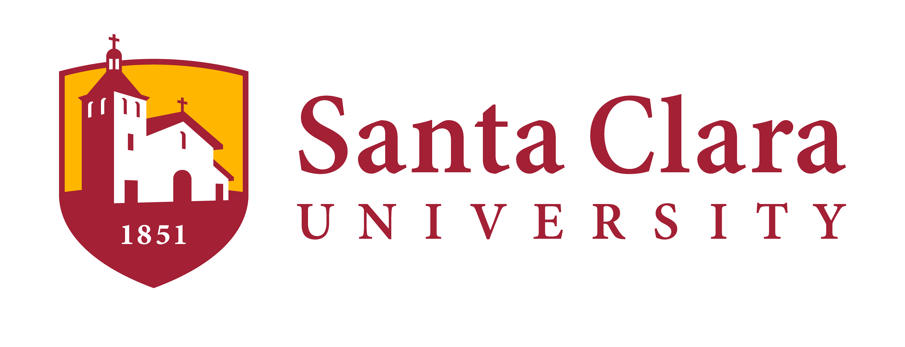

No code required
to cook. 🧑🍳
AI Kitchen is a new initiative at Santa Clara University giving students, faculty, and community members hands-on experience with the AI tools reshaping their fields. Open to the public.
Launch: Friday, April 24
What is AI Kitchen?
A place where students from any major learn to use AI tools through real projects, industry connections, and peer collaboration. No application process. Just show up.
Every discipline
English, business, psych, engineering, art, you name it
Industry mentors
Professionals demo their real AI workflows every Friday
Real projects
Work on projects that matter, for communities that need them
Fusion Cuisine.
All majors welcome.
Two ways to get involved, whether you have an afternoon or a whole quarter.
Taste Tests 🍴
Fridays, 1:00–5:30 p.m. · Lucas 306
Each session kicks off with a live demo from someone doing interesting things with AI, whether that's an industry professional, a faculty member, or a fellow student. Then it's open time to experiment, hack, and work on whatever you're curious about. Walk in any Friday, no signup required.
A short demo to spark ideas, then hours of open time to try things with people who can help.
Slow Roasts 🍲
Quarter-long projects
Found something you love in a Taste Test? Pitch a project, form a team across majors, and work with a faculty or industry mentor over a full quarter. Present your work at the end-of-year Potluck Showcase.
Example projects: Automate tedious workflows for campus staff. Build a custom AI pipeline for a local nonprofit. Create an AI agent skill that helps SCU students plan their coursework.
Browse project ideas →Industry Mentors: Want to share your AI workflow? 🧑🍳
We're looking for industry professionals to lead Friday Taste Test sessions. Demo how you actually use AI in your work, then guide students through a hands-on exercise. Mentor the next generation.
Get involved → Questions? klukoff@scu.eduAI Kitchen is for you if you're...
- An English major curious about AI writing tools
- A business student who wants to automate spreadsheet work
- A psych major wondering if AI can help code interviews
- An engineer who wants to build things outside the curriculum
- A first-gen student who has never had access to these tools
- Anyone who is curious and willing to show up
No technical background needed. Seriously.
Frequently Asked Questions
What happens at a Friday session?
Each session starts with a live demo (about an hour) from someone doing interesting work with AI, whether that's an industry professional, a faculty member, or a fellow student. After the demo, the rest of the afternoon is open time to experiment with tools, work on projects, or just explore whatever you're curious about.
Is this a course?
No. There's no fixed curriculum, no grades, and no learning progression you need to follow. AI Kitchen is an experimental space. What we work on each week is shaped by who shows up and what they're interested in.
Do I need a technical background?
Not at all. We welcome students from every major. Some sessions will be more technical than others, but the goal is to make AI tools accessible to everyone. A lot of working with AI is really about thinking clearly, breaking problems into steps, and expressing what you want in plain language, not writing code.
I'm an engineering student. Will this be useful for me?
Yes. You'll get exposure to tools and workflows you won't encounter in your coursework, work alongside students from other disciplines (which changes how you think about problems), and have the chance to build projects with real-world impact.
What kind of projects can I work on?
Projects range from automating workflows for campus staff to building AI pipelines for local nonprofits. Some may lead to research publications, others to entrepreneurial or social impact ventures. Check out our project ideas spreadsheet for inspiration, or pitch your own.
I'm an industry professional. What would I demo?
Whatever you actually do with AI in your work. That might be using AI for coding, writing, data analysis, design, research, or something else entirely. You don't need a polished talk or a textbook workflow. Showing students how you actually think through problems with AI tools is what's most valuable, including the parts where it doesn't work and you have to debug or iterate.
What if I don't feel like an "expert" in AI?
That's fine. Many of us are figuring this out as we go, and that's part of the point. If you're not ready to lead a demo, you're welcome to just drop in, help mentor students, and learn alongside everyone else.
When and where does AI Kitchen meet?
Fridays, 1:00 to 5:30 p.m. in Lucas 306 on the SCU campus. During spring quarter we meet weekly from April 24 through June 5. Summer meeting times are TBD. Drop in for as much or as little time as you'd like.
Do I need to commit to every week?
No. Come when you can. Some people will be here every Friday, others will drop in once or twice. Both are great.
How is AI Kitchen related to the Human-Computer Interaction Lab?
Think of AI Kitchen as a complementary creative studio or maker space for AI. It's open-access, no application needed, and welcomes students from every major. The Human-Computer Interaction (HCI) Lab is a research lab (by application only) focused on human-computer interaction. Prof. Kai Lukoff leads both, but AI Kitchen involves faculty from across departments. AI Kitchen also addresses a practical challenge: the HCI Lab receives over 500 applications from interested students but can only accept a very limited number. AI Kitchen is an open space where any student can show up and start exploring AI workflows and incubating project ideas. Projects that emerge here may grow into research projects in any faculty lab involved with AI Kitchen, or into entrepreneurial and social impact ventures.
How is AI Kitchen related to AI Collaborate?
AI Collaborate is an amazing and pioneering student organization at SCU. AI Kitchen has more direct faculty leadership, with student Studio Leads and a research focus. We plan to collaborate! In format, AI Kitchen is closer to the Imaginarium, another interdisciplinary initiative on campus focused on XR technologies that is also faculty-led with student leads.
How is AI Kitchen related to the Responsible AI initiative?
SCU's Responsible AI initiative focuses on interdisciplinary research, ethical AI education, and curriculum development, addressing questions like how AI should be used in teaching and what policies should guide its adoption. AI Kitchen complements that work from the other direction: it is a hands-on creative studio and maker space where students and faculty build with AI tools, learning what they can and cannot do through direct experience. We believe getting your hands dirty with the technology is one of the best ways to develop informed, critical perspectives on its implications.
What are good AI tools for me to get started with?
We put together an AI Tools Guide for SCU Students with our top picks across 10 categories, from general-purpose AI assistants to code generation, design, research, and more. Every tool on the list is free or offers premium access for students. Start with Google Gemini, which you already have through your SCU account, and explore from there.
Why "no code required to cook"?
Programming has always been moving closer to how humans actually
think and communicate. Early computers required instructions written
in raw numbers. Over the decades, programming languages became more
readable and expressive, from lower-level languages closer to the
machine to higher-level languages like Python that read almost like
natural language. Generative AI is the latest leap: today, you can
build working software by describing what you want in plain English.
Our thesis is
that this shift will allow a much wider range of people to participate
in creating software and digital experiences, bringing their own domain
expertise to problems that technology alone can't solve.
That said, understanding what's happening further down the stack can
be very helpful and sometimes essential. It depends on the context.
For early-stage prototyping, the emphasis is on speed and exploration,
and natural-language tools can get you remarkably far. For something
like a hospital application, where privacy, security, and reliability
are paramount, more robust and careful engineering is required.
That's exactly why AI Kitchen brings together faculty and students
from different disciplines, both technical and non-technical. A
business student might prototype a workflow automation using AI,
then partner with a CS student to harden it for production. A
psychology student might design an intervention, then collaborate
with engineers to build it reliably. The mix is the point.
Why the "AI Kitchen" theme?
It's deliberate. Research shows that framing shapes who shows up:
when computer science spaces look and sound like stereotypical tech culture,
women and underrepresented students opt out
(Cheryan et al., 2009).
A kitchen is familiar, communal, and creative. Everyone has
some relationship to a kitchen, regardless of major or background.
The name signals that this space isn't just for CS students.
Our visual identity is inspired by
Design Buddies,
the 200,000+ member design community founded by SCU alumna Grace Ling
(BS '19, MS '21). Ling's approachable, kawaii-influenced branding helped
build one of the largest and most inclusive design communities in the world.
We're taking a similar approach: if the vibe is welcoming, the people will be too.
Why bridge academia and industry?
AI tools and workflows are evolving so fast that academia often struggles to keep pace. At the same time, one of the biggest barriers to leveraging AI for non-technical applications is simply knowing what's possible. AI Kitchen creates a space where industry practitioners share what's actually working in the field, faculty bring critical thinking and domain expertise, and students get hands-on exposure to both. Everyone benefits from this kind of knowledge exchange: students see real-world applications, professionals get fresh perspectives, and faculty stay connected to how these tools are being used in practice.
Get Involved
Our first Taste Test is Friday, April 24, 1:00–5:30 p.m.
Lucas 306, Santa Clara University. 🍽️
Takes 30 seconds. We will only email you about AI Kitchen.